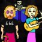
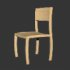
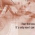
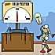
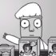

creative stuff
Herein dwells examples of the works of you talented
noise
and THE
PROGRAM
bods, with links to artist profiles and more info about the artists themselves. Onya punters.
Displaying page 1 of 4, containing 1-15 of 55 found items.
Pic //
Name //
In Brief //
"The meatheads" presents "Mass Destruction"
Part of a online cartoon series called "the meatheads".

Wanna be a Rockstar?
Interactive flash piece where you create your own band.
The Day Dad Flooded the House
The amusing true story of when Dad's late night bath had disasterous consequences.
buggy
My inspiration for all my animations I guess was really the character.
What We Do
"What we do" is based on a poem I made up about...

'Jasper' - conceptual chair | online animation
'Jasper' is an animation that explores chair design and the nature of design in general.
Grass
this is a short black and white flash about the end of a "Grass".

Feed Your Enemy
short and sweet, feed your enemy piece.
Boy
A boy's view of going to the shop.
The Dragon and the Rat
A short fable which tells the story of why dragons no longer exist.

listless (episode one)
A quick sketch about rejection.
Springtime
An ultra-quick flash animation bite on why Spring isn't everybody's fave time of year
Sad Little Man
a short about a sad little man

The Product
this is about how factory work can break people into mindless morons.
Safety Boy
this is a funny short flash about Safety Boy.
1
2
3
4
Next
status //
Guest. You may
Register
or
Log In
.
Australian Central Standard Time (GMT +09:30) //
10:57 PM, Sat, 5 Mar, 2005.